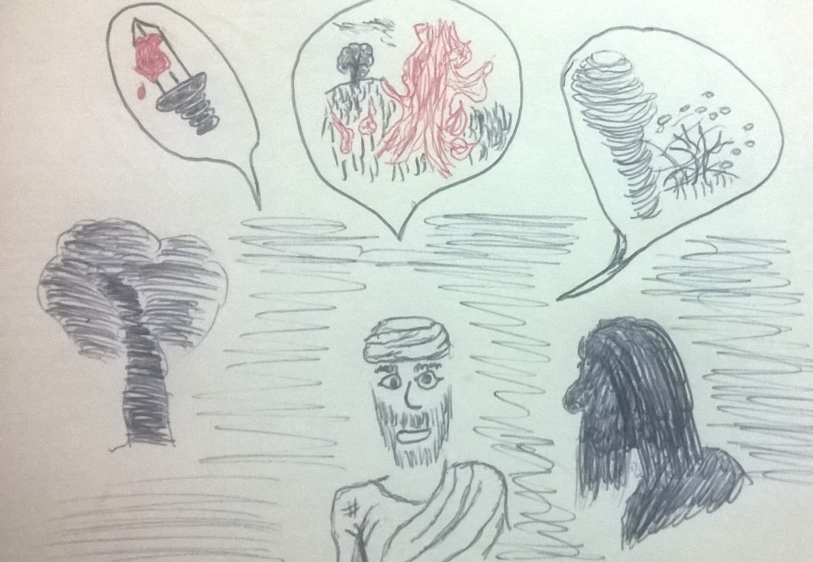

A História de Jó
E sucedeu um dia, em que seus filhos e suas filhas comiam, e bebiam vinho, na casa de seu irmão primogênito, Que veio um mensageiro a Jó, e lhe disse: Os bois lavravam, e as jumentas pastavam junto a eles; E deram sobre eles os sabeus, e os tomaram, e aos servos feriram ao fio da espada; e só eu escapei para trazer-te a nova. Estando este ainda falando, veio outro e disse: Fogo de Deus caiu do céu, e queimou as ovelhas e os servos, e os consumiu, e só eu escapei para trazer-te a nova. Estando ainda este falando, veio outro, e disse: Ordenando os caldeus três tropas, deram sobre os camelos, e os tomaram, e aos servos feriram ao fio da espada; e só eu escapei para trazer-te a nova. Estando ainda este falando, veio outro, e disse: Estando teus filhos e tuas filhas comendo e bebendo vinho, em casa de seu irmão primogênito, Eis que um grande vento sobreveio dalém do deserto, e deu nos quatro cantos da casa, que caiu sobre os jovens, e morreram; e só eu escapei para trazer-te a nova. (Jó 1.13-19)
Anterior Próximo